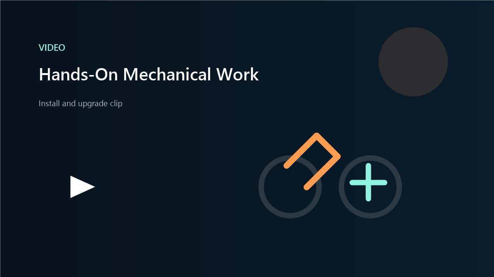

Alexander Amadeo-Ranch | Aerospace Engineering Student at UC Irvine
Aerospace work in structures, simulation, and hands-on projects.
I study aerospace engineering at UC Irvine. My work includes CubeSat structures, modeling and simulation, coding, technical writing, and hands-on mechanical projects.
- CubeSat structural analysis and hardware-aware design support
- MATLAB and Python work across computational physics and thermodynamics
- Technical proposals, reports, and policy memos backed by hands-on project execution


Featured Work
Selected projects that show how I work.
Most of the work sits where analysis, communication, and practical execution overlap.
UCI CubeSat Structures
Structural analysis work tied to real hardware context, with attention to how parts fit, behave, and integrate.
- Applied: static and frequency analysis on structural components
- Mindset: design choices checked against practical interfaces and build constraints
- Focus: analysis that stays connected to the hardware
Photon Paths Near a Black Hole
A computational physics project that turned a hard concept into a clear visual model.
- Built: photon capture and escape visualization in MATLAB
- Used: Paczynski-Wiita potential with a readable simulation output
- Focus: translating theory into something you can inspect and explain
ExtrakPak SAR Drone Concept
A heavy-lift drone proposal framed around safer remote recovery, system requirements, and operational tradeoffs.
- Covered: airframe, grappling system, remote control unit, and risk management
- Included: performance targets, cost framing, and regulatory considerations
- Focus: structured engineering thinking and technical writing
Mechanical Project Logs
Vehicle work that shows follow-through, diagnostics, and comfort working directly with parts and tools.
- Projects: suspension, braking, lighting, trim, exhaust, and tuning work
- Approach: practical fixes and upgrades documented with real media
- Focus: comfort moving between analysis and physical execution
Skills
Technical areas I keep coming back to.
Design + analysis
ANSYS, MATLAB, structural analysis, modeling, thermodynamics, and engineering tradeoff work.
Software + data
Python, MATLAB, JavaScript, HTML/CSS, plotting, notebook workflows, and data-backed technical visuals.
Engineering communication
Technical proposals, reports, presentations, and policy memos used to communicate decisions clearly.
Hands-on execution
Mechanical installs, repair work, diagnostics, and upgrade projects documented from start to finish.
Selected Materials
Resume and a few project materials.
More clips, documents, and notebooks are on the projects page.
Connect
Reach me on LinkedIn.
Resume, projects, and supporting material are linked here.
Areas
Structures, simulation, technical writing, and practical engineering execution.
Current direction
Internships, research, and early-career roles where analysis and implementation both matter.